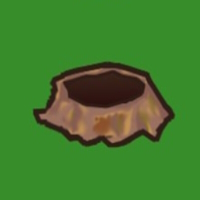

<DOCTYPE html>
<html>
<head>
      <meta charset="UTF-8">
    <title>Whac-A-Mole - Exercici G</title>
    <style>

        body { 
        text-align: center; 
        }

        img { 
        flex-direction: row;
        width: 200px; 
        height: 200px; 
        }

        #punts { 
        font-size: 20px; 
        font-weight: bold; 
        }
    
    </style>  
</head>
<body>


<!--Id per poder accedir a les imatges-->



<!--Puntuació-->
    <p>Puntuació: <span id="punts">0</span></p>

    <button onclick="posaralarma()">Començar</button>


<script>

    var puntuacio = 0; //Variable per guardar la puntuació.
    var timeouts = {}; //Objecte per guardar els timeouts de cada topo.


    function posaralarma() {
        setInterval(alarma, 1000); //Crida a la funció cada 1 segons.
    }


    function alarma() {
        var aleatori = Math.trunc((Math.random() * 3) + 1);  //Variable que guarda el numero aleatori de l'1 al 3.
        var id = "talp" + aleatori;
        var img = document.getElementById(id);


    if (timeouts[id]) { //Si ja hi ha un timeout per a aquest topo, el netegem abans de posar-ne un de nou.
        clearTimeout(timeouts[id]);
    }


        img.src = "imgs/topoSi.jpg"; //Canvia la imatge a topoSi.
        timeouts[id] = setTimeout(function() { 

        img.src = "imgs/topoNo.jpg"; //Torna a topoNo després de 1 segon.
        delete timeouts[id];
        }, 400); //Torna a topo No després de 0.4 segons.
        }


    function picar(img) {
    if (img.src.includes("topoSi.jpg")) { //Comprova si la imatge és topoSi abans de picar.
    if (timeouts[img.id]) { 
        clearTimeout(timeouts[img.id]); 
    }


        img.src = "imgs/topoPam.jpg"; //Canvia la imatge a topoPam quan es pica.
        puntuacio = puntuacio + 10; //Suma 10 punts a la puntuació.
        document.getElementById("punts").innerHTML = puntuacio; //Actualitza la puntuació a la pàgina.


//Crear un nou objecte d'àudio per reproduir el so.
        var audio = new Audio('audio/boing.mp3');
        audio.play();


//Timeout per tornar a topoNo després de picar.
        timeouts[img.id] = setTimeout(function() {
        img.src = "imgs/topoNo.jpg";
        delete timeouts[img.id]; 
        }, 0.1);//Torna a topo No després de 0.1 segons.
}
    }


</script>
</body>
</html>